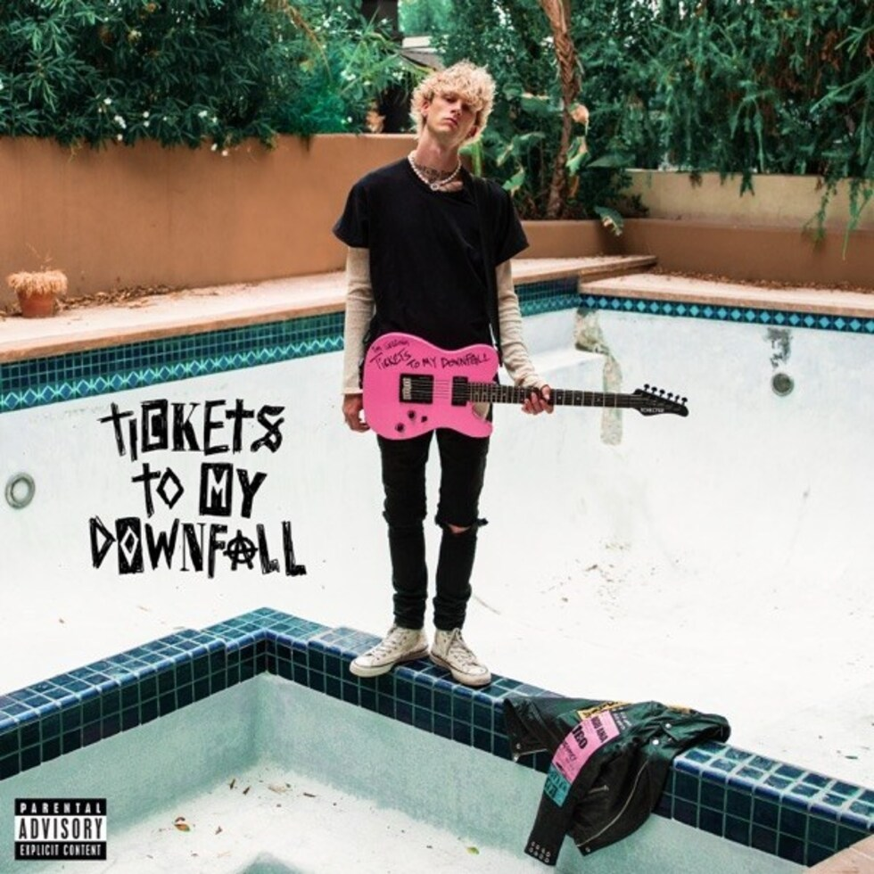

<ion-tabs #tabs (ionTabsDidChange)="setSelectedTab()">
<!-- setSelectedTab vai ser um metodo colocado no .ts -->

<div class="player">
  <div class="progress-bar">
    <!-- porcentagem definida no .ts o numero e o estilo de deixar essa barrinha com branco no sccs -->
    <div class="progress" [style.width]="progress + '%'"> </div>
  </div>
  <ion-row class="ion-no-padding">
    <ion-col size="2" class="ion-no-padding">
      
    </ion-col>

    <ion-col size="8" class="ion-align-self-center">
      <b>Bloody Valentine</b> <br>
      <span>Machine Gun Kelly</span>
    </ion-col>

    <ion-col size="2" class="ion-text-center ion-no-padding ion-align-self-center">
      <ion-icon name="play" color="light" size="large"></ion-icon>
    </ion-col>
  </ion-row>
</div>

<ion-tab-bar slot="bottom">
  <ion-tab-button tab="tab1">
    <!-- vai fazer um if para se ele estiver na tab1 vai ser um icone diferente se n tiver -->
    <ion-icon [name]="selected == 'tab1' ? 'home' : 'home-outline'"></ion-icon>
    <ion-label>Home</ion-label>
  </ion-tab-button>

  <ion-tab-button tab="tab2">
    <ion-icon [name]="selected == 'tab2' ? 'search' : 'search-outline'"></ion-icon>
    <ion-label>Search</ion-label>
  </ion-tab-button>

  <ion-tab-button tab="tab3">
    <ion-icon [name]="selected == 'tab3' ? 'library' : 'library-outline'"></ion-icon>
    <ion-label>Library</ion-label>
  </ion-tab-button>
</ion-tab-bar>

</ion-tabs>

